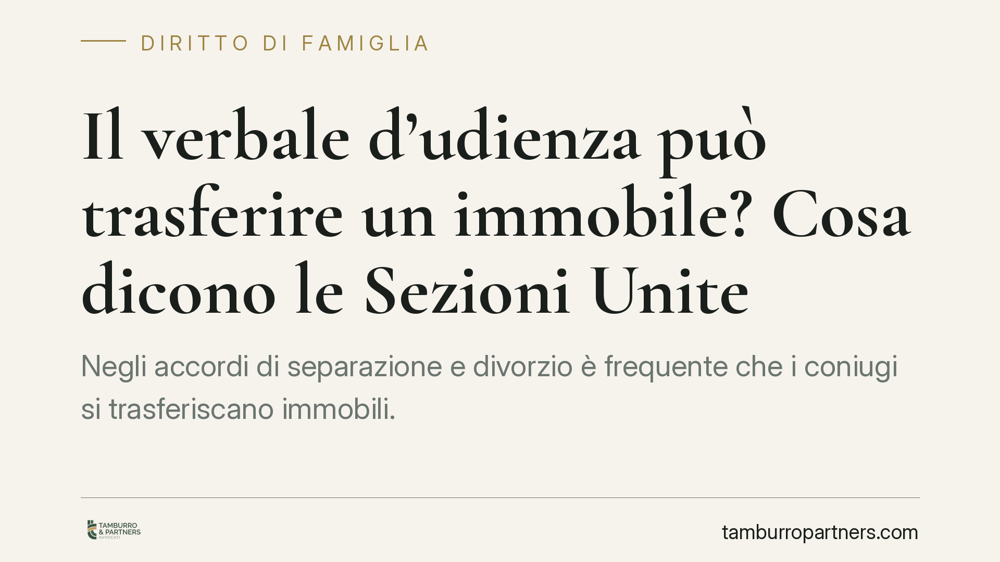

Il verbale d'udienza può trasferire un immobile? Cosa dicono le Sezioni Unite
Negli accordi di separazione e divorzio è frequente che i coniugi si trasferiscano immobili. Ma il verbale d'udienza redatto dal cancelliere basta a trascrivere il passaggio di proprietà? Le Sezioni Unite del 2021 hanno chiarito la questione, distinguendo nettamente il verbale reso davanti al giudice dalla conciliazione non contenziosa ex art. 322 c.p.c. La differenza incide sulla sorte del trasferimento.

Il problema: quando il verbale diventa titolo per la trascrizione
Per trasferire la proprietà di un immobile la legge richiede la forma scritta (art. 1350 cod. civ.). Per trascrivere il trasferimento nei registri immobiliari serve invece un titolo qualificato: sentenza, atto pubblico o scrittura privata autenticata (art. 2657 cod. civ.).
Negli accordi di separazione e divorzio i coniugi spesso pattuiscono il passaggio di un immobile — la casa familiare, una quota di comproprietà — a favore dell'altro o dei figli. La domanda ricorrente è: il verbale d'udienza che recepisce quell'accordo è di per sé sufficiente a ottenere la trascrizione, oppure serve un successivo atto notarile?
L'inquadramento normativo
Il punto di partenza è l'art. 2699 cod. civ., che definisce atto pubblico il documento redatto da un pubblico ufficiale autorizzato ad attribuirgli pubblica fede. Il cancelliere è pubblico ufficiale e il verbale d'udienza da lui redatto ha natura di atto pubblico.
Con la sentenza n. 21761 del 27 luglio 2021 le Sezioni Unite della Cassazione hanno affermato che gli accordi di trasferimento immobiliare contenuti nel verbale di separazione o divorzio, omologati o comunque recepiti dal giudice, costituiscono titolo idoneo alla trascrizione ai sensi dell'art. 2657 cod. civ. Non è quindi necessario un ulteriore atto notarile: il verbale d'udienza, redatto dal cancelliere e sottoscritto dalle parti e dal giudice, assolve i requisiti formali.
Le Sezioni Unite hanno però posto una condizione tecnica non trascurabile: resta ferma la necessità di allegare la documentazione richiesta dalla normativa urbanistica e catastale (conformità, menzioni edilizie), che il notaio normalmente verifica. In sede giudiziale questa verifica deve comunque essere garantita.
Il limite: la conciliazione ex art. 322 c.p.c.
Diverso è il caso del verbale di conciliazione non contenziosa davanti al giudice di pace, disciplinato dall'art. 322 c.p.c. Si tratta di una conciliazione richiesta in via preventiva, fuori da un giudizio già pendente.
Secondo l'orientamento consolidato, questo verbale ha efficacia di titolo esecutivo entro i limiti della competenza per valore del giudice di pace, ma non equivale a un titolo idoneo alla trascrizione immobiliare. La ragione è strutturale: manca il controllo giurisdizionale pieno tipico del procedimento di separazione o divorzio, e la funzione dell'atto è conciliativa, non decisoria.
La distinzione è netta e va tenuta presente: non ogni verbale redatto da un cancelliere apre le porte del registro immobiliare.
Cosa cambia in concreto
Per chi affronta una separazione o un divorzio consensuale, il principio delle Sezioni Unite ha un effetto pratico rilevante: è possibile inserire direttamente nell'accordo il trasferimento dell'immobile, evitando i costi e i tempi di un successivo atto notarile.
Questo non significa che il notaio diventi superfluo in ogni caso. La corretta redazione delle clausole, la verifica urbanistica e catastale e la precisa individuazione dell'immobile restano passaggi delicati: un errore può bloccare la trascrizione presso il conservatore dei registri immobiliari o generare contestazioni future.
Attenzione anche all'aspetto fiscale: i trasferimenti tra coniugi in sede di separazione e divorzio godono di un regime agevolato, ma i presupposti vanno documentati con precisione.
Cosa fare in concreto
- Verificate la sede corretta. Un trasferimento immobiliare tra coniugi va formalizzato nel verbale di separazione o divorzio, non tramite conciliazione ex art. 322 c.p.c.
- Predisponete la documentazione tecnica (conformità urbanistica e catastale, visure) prima dell'udienza: la sua assenza può impedire la trascrizione.
- Descrivete l'immobile in modo completo: dati catastali, confini, provenienza. Le clausole generiche sono la causa più frequente di rifiuto da parte del conservatore.
- Curate il profilo fiscale delle agevolazioni previste per gli accordi di famiglia, documentandone i presupposti.
- Fatevi assistere nella redazione dell'accordo: il risparmio del notaio non deve tradursi in un titolo inefficace.
---
*Contributo informativo a cura di Tamburro & Partners - Avv. Giuseppe Tamburro. Non costituisce parere legale.*
Ogni famiglia ha il suo equilibrio.
Separazione, divorzio, affidamento, assegno: se vuoi un confronto riservato su una specifica situazione, scrivi allo studio. Ti rispondiamo entro un giorno lavorativo.